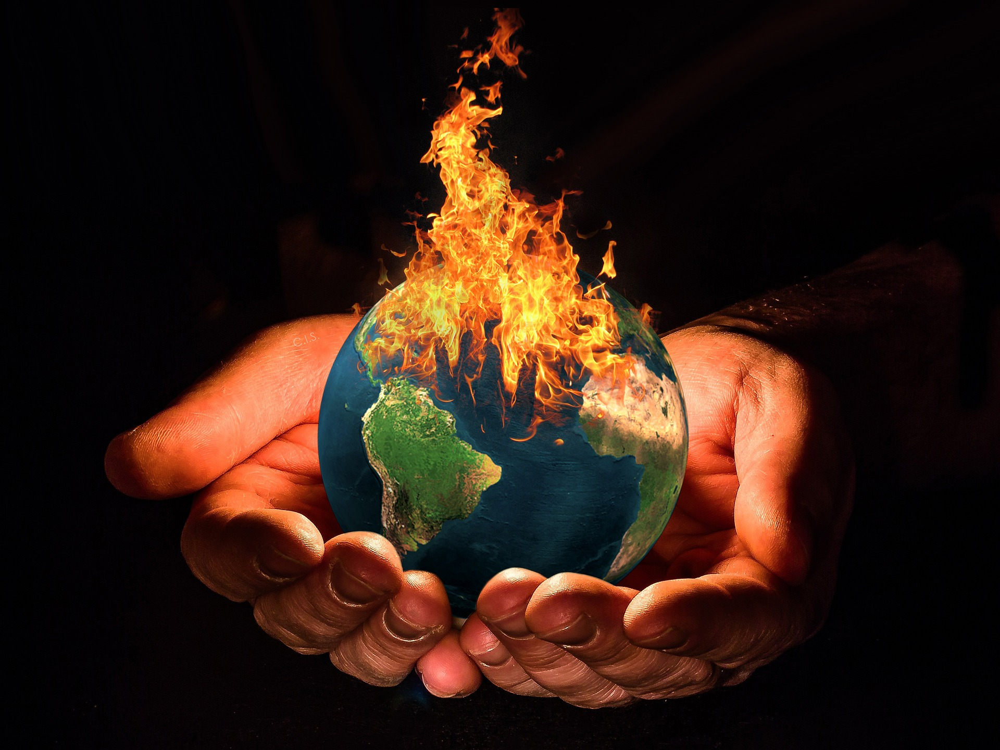

|  | 全球暖化解決方案 |
氣候變遷真的跟人類有關嗎？
在2013年，以全球1,300位獨立科學專家組成的聯合國政府間氣候變遷專門委員會（IPCC）， 第五次評估報告表示：「有超過95%的機率顯示，人類行為是過去50年來造成暖化現象的主因。」 人類的影響包括排放二氧化碳、甲烷和氧化亞氮等溫室氣體，若此情況持續下去， 全球表面溫度很有可能在未來數十年持續上升，科學家預測在下一個世紀內， 全球升溫可能達到華氏2.5度到10度（約攝氏1.4度至5.6度）。

有沒有可能是太陽能量增加，使地球溫度升高？ 根據美國太空總署NASA觀測，從1750年至今， 太陽照射的平均能量仍然穩定，或僅小幅度增加。 如果暖化是因為太陽更加活躍，科學家應該會在大氣層所有層面都偵測到更高的溫度， 但根據目前觀察，僅在大氣層表面和底層測到較高溫度， 這顯示溫室氣體使熱能被困在大氣的底層。

我們有可能阻止氣候危機嗎？
大氣中的二氧化碳濃度已達六十五萬年來最高，2010-2019年是成為有紀錄以來最熱的十年。 而要控制全球升溫，首先必須降低二氧化碳的排放。 2015年聯合國終於通過《巴黎氣候協議》（The Paris Agreement）， 各國首次同意「本世紀末以前，必須控制地球升溫於攝氏 2 度以內」， 並且各國每五年必須檢討「國家自定減碳貢獻」（NDCs）。 隨後IPCC在 2018 年時，發布新的研究報告， 建議各國必須以 1990 年平均溫度為參考基準，更進一步將地球升溫控制在攝氏 1.5 度之內， 更指出2030年的碳排放必須減少 45%，2050 年達到淨零碳排（碳中和）， 這是防止氣候變遷帶來嚴重災難的唯一方法。
各國抗暖具體行動
為了因應全球暖化，聯合國氣候峰會在2015年年底通過了「巴黎協定」， 此協定的內容為，保持21世紀的全球氣溫升溫不超過工業化前水準的2℃，並更進一步限制不超過1.5℃。 目前占全球溫室氣體排放量55%以上的國家中，至少55個氣候公約締約方簽署了巴黎協定。 雖然美國的碳排量是全球數一數二的，但有消息指出總統當選人川普卻揚言要退出巴黎協定， 而其他各國仍然有志一同的表示繼續堅持抗暖化，並發表「馬拉喀什行動宣言」， 以呼籲各國要以最高政治承諾一起對抗氣候變遷。
為挽救發燒的地球，世界各國紛紛提出自願性減排計畫， 究竟各國對於抗暖化的具體行為有哪些？
美國
以世界上的領導國——美國為例，卸任的美國總統歐巴馬， 在2014年根據「潔淨空氣法」宣布推動美國環境保護署的提案， 目的是要以2005年的碳排放量為基準， 強制所有美國的電廠必須在2030年底前，減少30%的碳排放量。

由於美國有超過600家的燃煤發電廠，因此發電廠是美國碳排放最大的來源， 而此政令一出，便有專家指出，未來10年內有數百家電廠會因此關閉。 此外，總統歐巴馬更在2015年時簽署行政命令，要求聯邦政府的各單位， 要以2008年的溫室氣體排放量為基準， 在未來的10年（也就是2025年）必須減少40%的溫氣體排放。 依據白宮的估計，只要聯邦政府和企業同心協力， 可望在2025年前減少排放2600萬噸的溫室氣體， 這量相當於550萬輛車在1年會排放的廢氣!
中國
2014年歐巴馬去中國做訪問時，與中國國家主席習近平共同發表「中美氣候變化聯合聲明」， 美國做出承諾說將以2005年為基準，到了2025年，溫室氣體排放量將減少26%至28%； 中國則承諾在2030年，將潔淨能源的比例提高到20%，而屆時溫室氣體的排放量也不會再增加。 中國在2008年發布「中國應對氣候變化的政策與行動」白皮書，顯示中國也在氣候變遷上採取行動， 在考量經濟快速發展及減緩溫室效應兩者間做出平衡，提出「低碳經濟」，以能在發展國家的前提下努力。
綠能政策落後，臺灣產業自組聯盟，齊聲倡議淨零願景
當全球紛紛喊出 2050 年淨零碳排與碳中和目標， 臺灣政府減碳目標卻仍遠遠落後，面對海外市場「碳關稅」與「潔淨產業鏈」的壓力， 2021年臺灣產業掀起「淨零」熱潮，多家知名企業組成聯盟自救， 齊聲向政府倡議，該是時候正視氣候變遷，加速發展再生能源，並提出更積極的減碳政策。
產業標竿共組聯盟，積極響應能源轉型
2021年臺灣企業和組織發起「台灣淨零排放倡議 Net Zero 2030/2050 Initiative」 參與者包括：台灣永續能源研究基金會、中鋼公司、中華電信、中鼎集團、日月光投控、 台新金控、台積電、台泥、玉山金控、亞泥、信義房屋、國泰金控、新光金控和鴻海集團， 承諾於 2030 年前組織總部與辦公室據點達成淨零碳排，並朝供應鏈淨零碳排為目標努力。
/cloudfront-ap-northeast-1.images.arcpublishing.com/appledaily/MNOWU5LEHFG4LO3FRTAAZAXHNE.jpg)
無獨有偶，台達電、台積電、宏碁、華碩、臺灣微軟、友達、光寶、和碩等八家科技業者， 也於同年 6 月共同組成「台灣氣候聯盟」， 率先承諾「2050 年前達到製程 100% 使用再生能源」、 「2030 年前，企業成員自有或租賃車隊車輛達成 100% 電動化」， 並且影響與帶領各自供應鏈同步達成碳中和目標，向外界倡議積極減碳。
全臺最大的產業公會「電機電子工業同業公會」理事長李永如即表示： 「碳中和議題在未來 30 年內對全球產業既是壓力，也是極大商機。」 台灣氣候聯盟秘書長彭啟明也指出：「產業界對碳關稅等壓力深感焦慮， 認為企業和政府因應2050國際碳中和目標刻不容緩，企業也願協助政府因應這項目標。」
RE10X10綠電倡議，邀集中小企業共同淨零
能源轉型並非大企業的專利，早在2020年綠色和平即發起「RE10x10綠電倡議」， 邀請全臺中小企業共同在「2025年達成轉用10%以上綠電」，獲得14家企業主率先加入。 2021年雖因疫情影響，原訂5月的第二屆綠電論壇延至6月， 仍有逾600家企業代表報名並以線上形式參與論壇，最高同時在線觀看人次高達442人。
氣候變遷不是都市傳說，提高公民意識一同戰勝危機
氣候的戰役已是全球必須面對的挑戰，不僅影響層面擴及各國，也需各執政者與決策者確實做出改變。 如今，全球多國已紛紛宣布碳中和目標，而減緩氣候變遷也成為商業投資界關注的趨勢。 在這條路上，仍需要有您我凝聚公民力量，要求在地政府與企業正視氣候危機， 設立具有野心的減碳目標，為您我及下一代做出正確決策，爭取一個宜居、平安的未來。
守護森林與海洋
全球森林與海洋正面臨前所未有的危機，無論是過度捕撈、塑膠污染、海底鑽油、全球暖化， 使海洋生態逐漸失衡，或是畜牧業與紙漿、棕櫚油等企業為了商業利益大規模砍伐、焚燒森林， 都使「減碳神隊友」削弱原有功能，甚至會將已封存的二氧化碳釋放至大氣，助長氣候危機。
一旦氣候變遷日益嚴重，就會如惡性循環般，導致森林環境更乾燥， 大火難以撲滅，焚燒過程又製造更多二氧化碳，同樣模式一再重複。 因此保護珍貴森林和海洋是減緩氣候變遷不可忽視的一環， 須要關心環境的您我持續為她們發聲，制定有效的保護法規。

除了飲食之外，平時消費盡量選擇當季、在地產品，減少運輸及存放時所需的能源。 而購買的物品，無論是食衣住行或產品包裝，都以可多次使用為原則， 例如以可重複使用的容器取代一次性塑膠包裝，即能減少資源消耗及背後的環境成本。 根據國際環境法中心（CIEL）的報告，估計到2050年，從石油中生產塑膠以及焚燒所造成的碳排放量， 可能高達27.5億噸，相當於615座燃煤發電廠！因此實踐無塑生活、少用一次性的塑膠製品， 就是減少抽取石油和製造塑膠所需耗費的資源，更能有效助於減緩氣候變遷。
相關影片: 綠色和平 臺灣
 |
 |
 |
 |
 |
 |
 |
 |